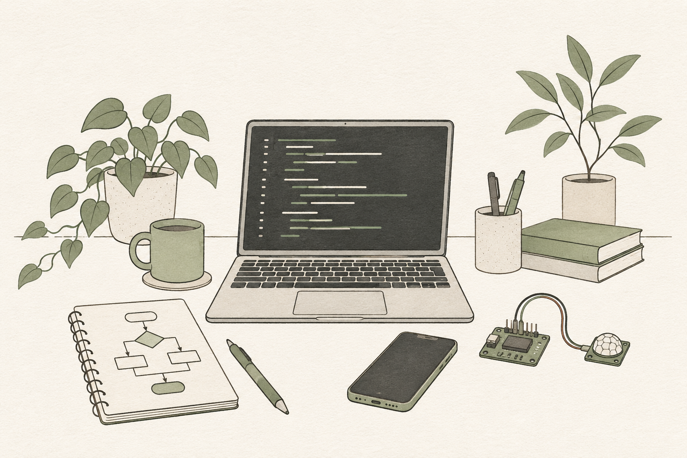
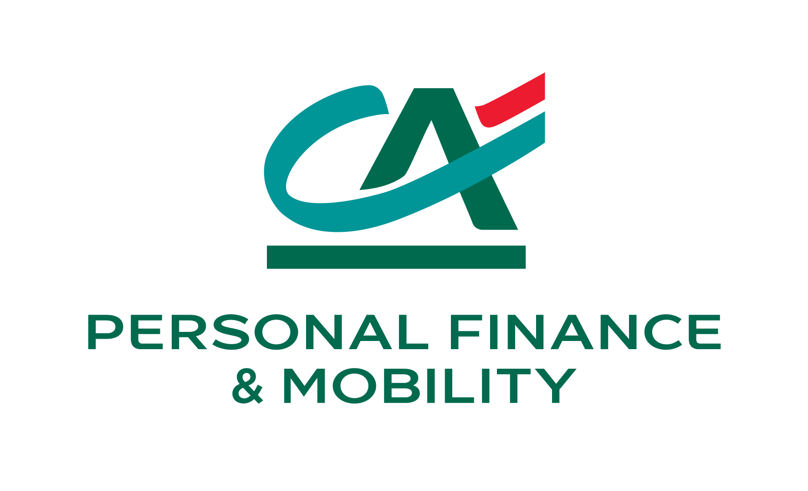
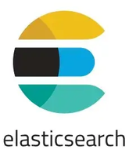
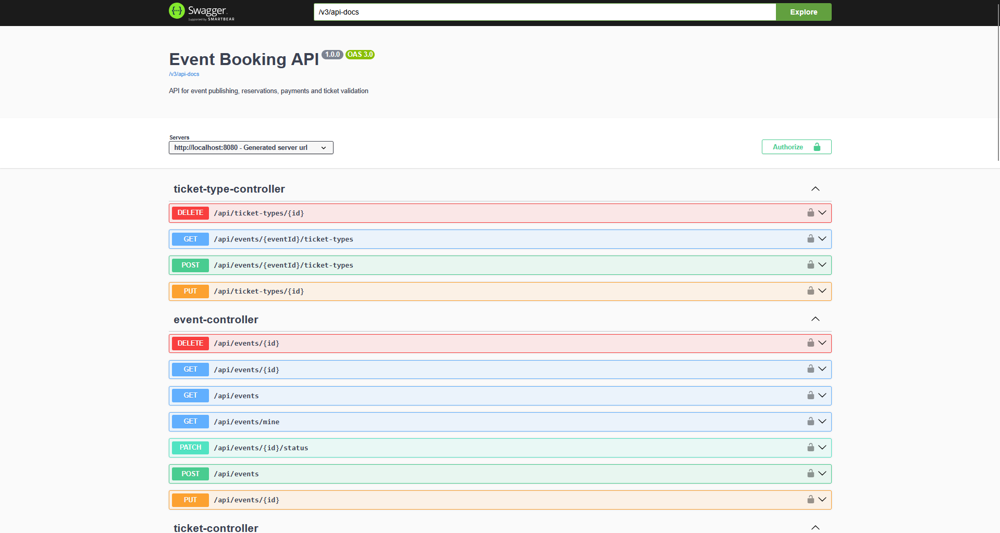
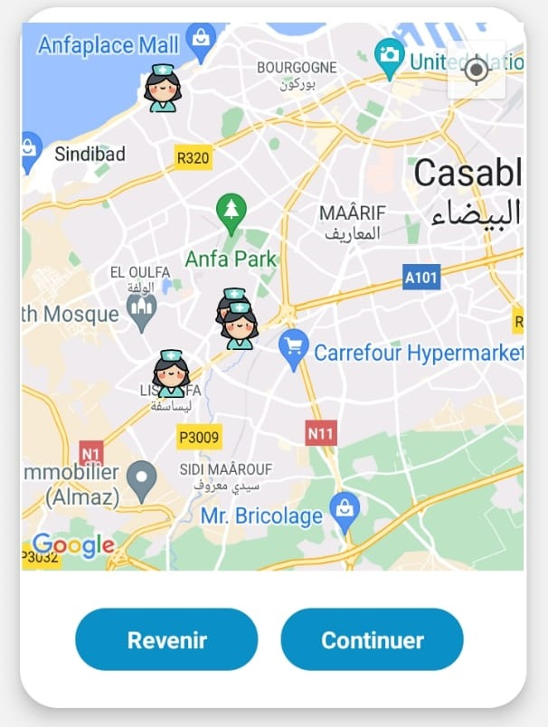
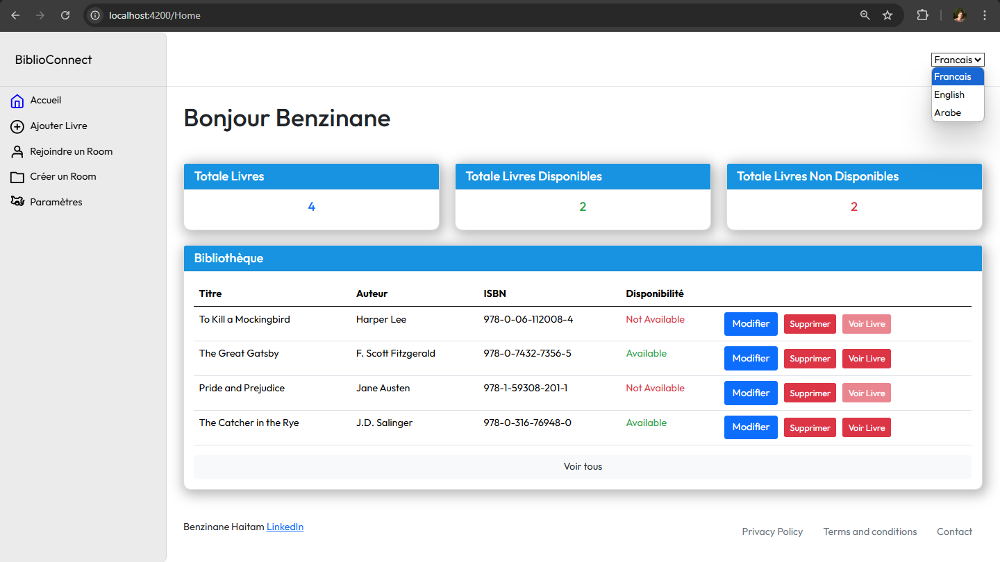
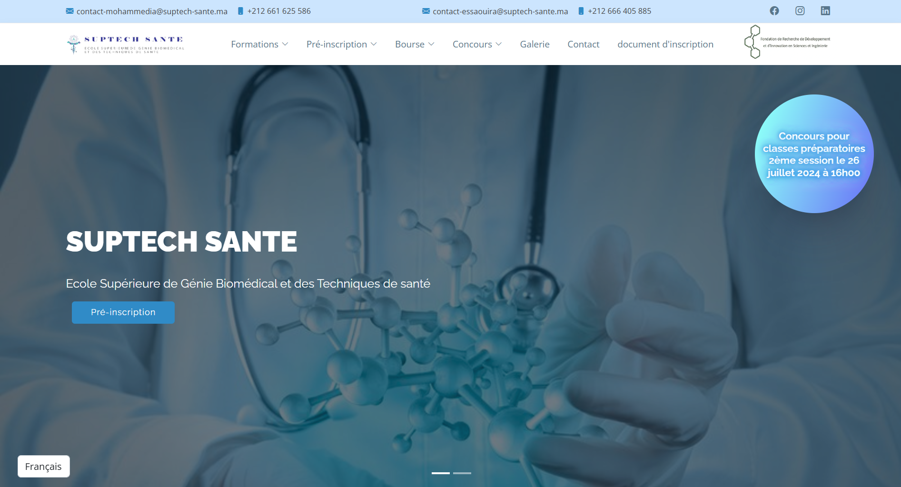
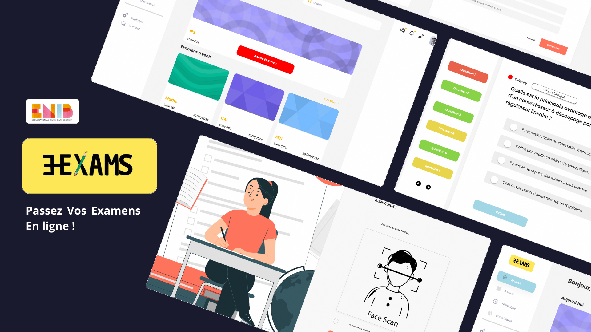
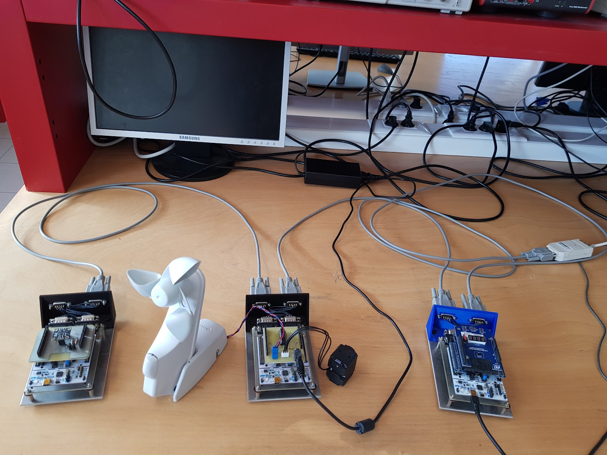
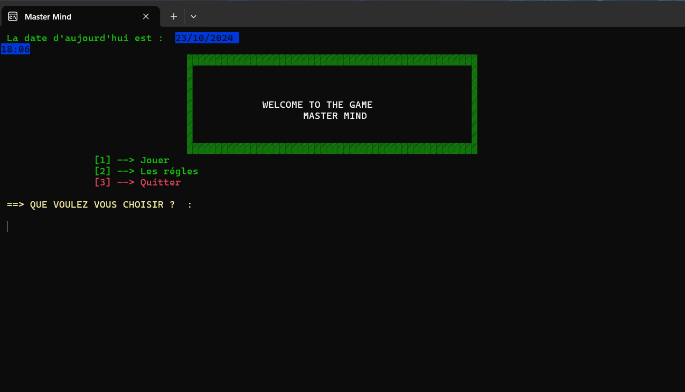

Front-end & mobile
Construire des interfaces claires et des expériences fluides.
Ingénieur logiciel · Java, Spring Boot & Angular
Diplômé de l’ENIB, je suis ingénieur logiciel spécialisé en développement backend Java et full stack Java/Angular.
Je recherche un CDI en développement backend Java ou full stack Java/Angular.
Île-de-France · Mobile partout en France
Ingénieur diplômé de l’ENIB en 2026, je me spécialise dans le développement Java et l’écosystème Spring.
Je développe des applications avec Java et Spring Boot pour le backend, et Angular ou React pour les interfaces. J’aime comprendre les besoins des utilisateurs et créer des solutions fiables et faciles à maintenir.
Chez Crédit Agricole Personal Finance & Mobility, j’ai travaillé sur 19 microservices de gestion documentaire, de signature électronique et de communication client. Je suis intervenu du développement aux tests, au déploiement et au suivi en production.
Chez Climate Solutions, j’ai développé des API et des interfaces React pour des données IoT. J’ai amélioré les temps de réponse d’environ 40 % avec Redis et participé au déploiement sur Google Cloud avec Docker et Kubernetes.
J’ai aussi créé un outil interne utilisant des agents IA pour automatiser des tâches répétitives chez Crédit Agricole. Je recherche aujourd’hui une équipe où travailler sur des projets Java, échanger et continuer à apprendre.
Soigner les tests, la qualité du code et la fiabilité en production.
Proposer des améliorations et mener une solution de la conception au déploiement.
Collaborer en Agile, échanger avec les métiers et m’adapter aux besoins du projet.
Vidéo de présentation à venir.
Mon parcours et mes motivations, en quelques minutes.
Construire des interfaces claires et des expériences fluides.
Développer la logique métier et structurer les données.
Du travail en équipe aux projets de systèmes embarqués.

Crédit Agricole Personal Finance & Mobility
Massy, Île-de-France · Sur site
Au sein de la Squad Communication Client, contribution au développement, à l’évolution et au maintien en condition opérationnelle d’applications métier critiques : gestion électronique de documents (GED), signature électronique et communications clients (e-mails, SMS, courriers).
Java 21, Spring Boot, Spring Data JPA, Hibernate, API REST, Microservices, MySQL, Redis, GitLab CI/CD, Argo CD, Maven, Git, SonarQube, JUnit, Mockito, Swagger/OpenAPI, Elasticsearch, Jira, Agile/Scrum.
Climate Solutions
Aubenas, Auvergne-Rhône-Alpes · Sur site
Développement de solutions IoT pour la collecte, le traitement et la visualisation des données issues de capteurs connectés.
Java 17, Spring Boot, PostgreSQL, Redis, React, JavaScript, React Native, ThingsBoard, Swagger/OpenAPI, Docker, Kubernetes, GCP, GitHub Actions.
Fondation de Recherche de Développement et d’Innovation en Sciences et Ingénierie
Maroc · Sur site
Conception et développement d’une application web complète pour une école de santé, avec Laravel 10, PHP, MySQL, JavaScript, HTML, CSS et Tailwind CSS. Modélisation en UML et déploiement sur un serveur Linux Debian.
Laravel 10, PHP, MySQL, JavaScript, HTML, CSS, Tailwind CSS, Bootstrap, UML, Linux Debian.
HPS
Maroc · Sur site
Développement d’un outil en Python avec une interface PyQt pour analyser les messages ISO 8583 des transactions bancaires, avec conception des algorithmes.
Python, PyQt, ISO 8583.
2023 — 2026 · FRANCE
Cursus ingénieur · Informatique
2021 — 2023 · MAROC
DUT · Génie informatique

Lecture des produits d’un fichier XML contenu dans une archive ZIP, puis indexation dans Elasticsearch 7.4.1. Le traitement en streaming permet de lire les produits progressivement, sans charger tout le fichier en mémoire. BulkProcessor regroupe les produits par lots pour limiter le nombre de requêtes.

API REST de gestion d’événements et de billetterie développée avec Spring Boot. Elle couvre le cycle complet d’une réservation : publication de l’événement, gestion des stocks, paiement, émission des billets et contrôle à l’entrée.

APPLICATION MOBILEFaciliter la prise de rendez-vous médicaux : disponibilités, réservation et notifications dans une seule application.
Voir le code sur GitHub
WEB · EN COURSUne bibliothèque collaborative avec des salons virtuels pour lire ensemble et échanger en temps réel.
Voir le code sur GitHub
SITE INSTITUTIONNELUn site pour présenter un établissement d’enseignement supérieur, ses formations et son univers.
Visiter le site
APPLICATION WEBUne application de gestion des examens pensée pour les étudiants, avec une interface accessible et structurée.
Voir le code sur GitHub
SYSTÈMES EMBARQUÉSCollecter des données environnementales sur des cartes STM32 et les transmettre à un ordinateur via un bus CAN.
Voir le code sur GitHub
LOGIQUE & ALGORITHMIQUEUn jeu à deux joueurs : retrouver une combinaison de cinq chiffres en vingt essais, avec sauvegarde de la partie.
Voir le code sur GitHubPour une opportunité professionnelle ou un projet, vous pouvez me contacter par email ou sur LinkedIn.
benzinanehaitam@gmail.com +33 7 45 66 36 31